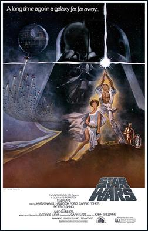

It is the first film in the original Star Wars trilogy and the beginning of the Star Wars franchise.
Starring Mark Hamill, Harrison Ford, Carrie Fisher, Peter Cushing, Alec Guinness, David Prowse, James Earl Jones, Anthony Daniels, Kenny Baker, and Peter Mayhew, the film focuses on the Rebel Alliance, led by Princess Leia (Fisher), and its attempt to destroy the Galactic Empire's space station, the Death Star.